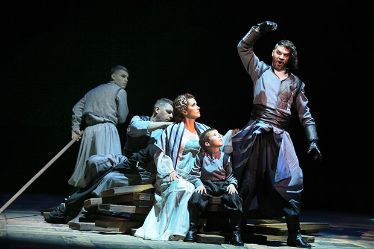
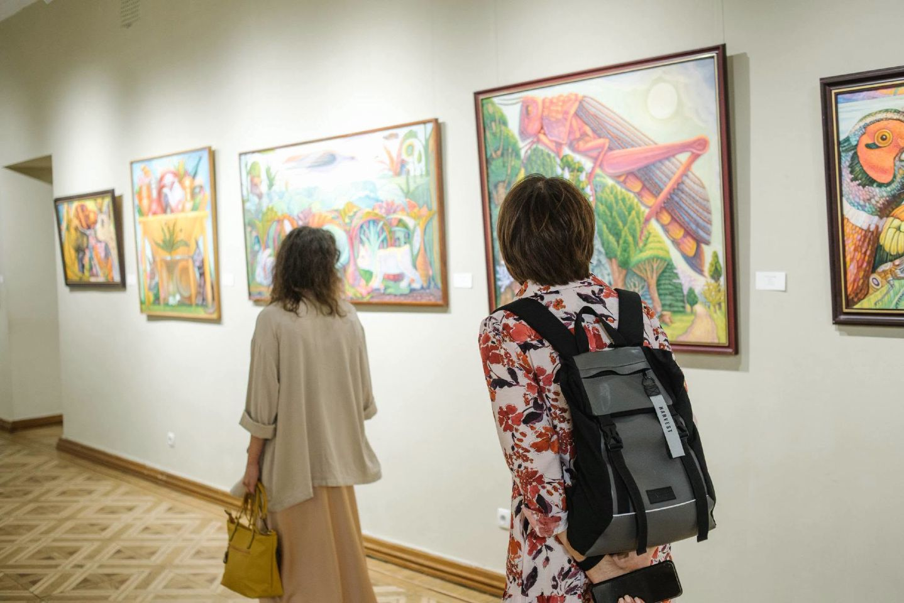
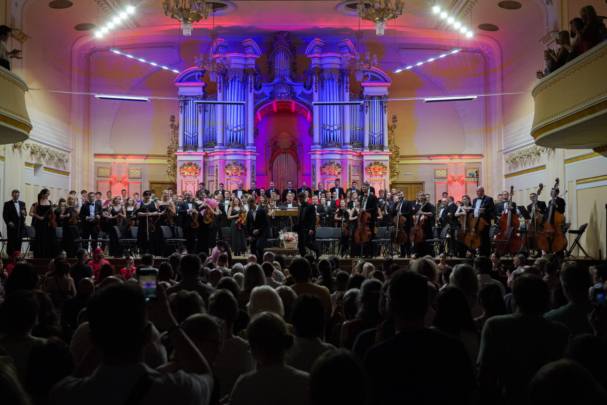
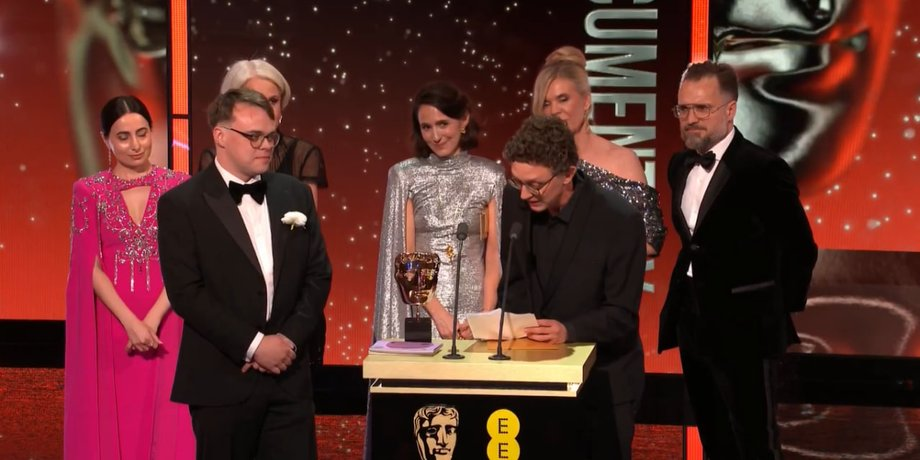

1. Грандіозна прем'єра класичної драми у Національному театрі

Режисери презентували новаторську постановку класичної п'єси з використанням сучасних мультимедійних декорацій та світлових ефектів. Глядачі аплодували стоячи.
Автор статті: Дмитро Бондаренко
2. У столиці відкрилася міжнародна виставка сучасного живопису

Понад 50 художників з 12 країн світу зібралися в галереї для демонстрації своїх робіт. Виставка присвячена темі збереження культурної спадщини.
Авторка статті: Олена Марченко
3. Благодійний концерт філармонії зібрав рекордну суму

Симфонічний оркестр виконав шедеври українських композиторів XIX–XX століть. Зібрані кошти будуть спрямовані на реставрацію старовинних музичних інструментів.
Автор статті: Ігор Василенко
4. Український документальний фільм отримав нагороду європейського кінофестивалю

Стрічка розповідає про збереження унікальних архітектурних пам'яток. Журі відзначило високу операторську майстерність та глибину дослідження теми.